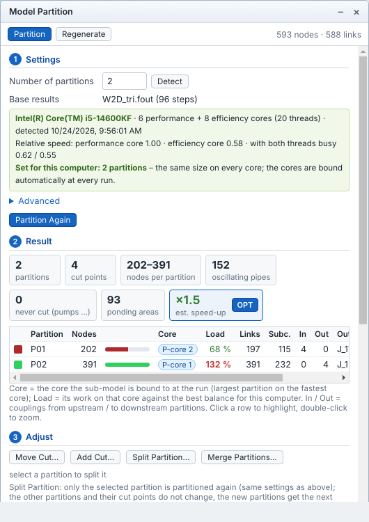
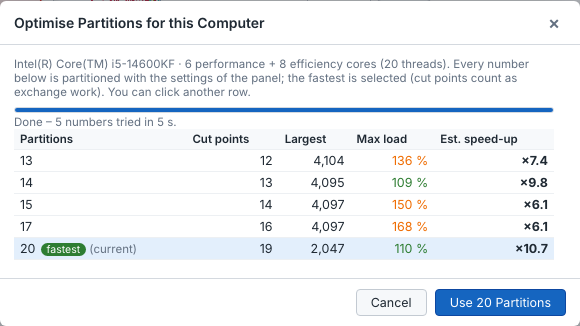
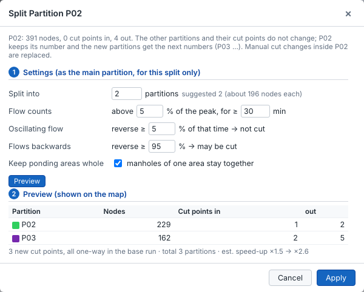
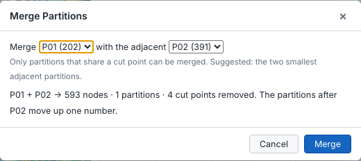

Model partition
Large models take long to run because one processor core does most of the work. Tools ▸ Partition ▸ Partition Model splits the model into sub-models along the flow, so that the coupled parallel simulation can run them at the same time on several cores. You enter only the number of partitions – or let Detect and OPT choose it for your computer; the cut points are found automatically. Model partition is part of the HPS (High Performance Simulation) edition.

How the model is split
- One direction of flow per partition. The flow directions come from the base results (the results loaded when you partition). Every partition drains towards its own outfalls or towards one downstream partition; water never flows back and forth across a cut.
- Only conduits are cut, and only where it is safe. Pumps, orifices, weirs, outlets and the links of flow dividers are never cut. Pipes with oscillating flow (flow that changes direction during the run) are not cut, and ponding areas – manholes that flood onto the same surface – stay in one partition.
- Balanced and few cuts. The partitions get about the same amount of work (within the size tolerance) with as few cut points as possible, because every cut point is exchanged in every iteration of the run. After Detect, partitions on slower cores get less work.
At a cut point the pipe stays in the upstream partition. In the upstream sub-model its downstream end becomes a boundary outfall; in the downstream sub-model the node receives the pipe's flow. During the coupled run the two sub-models exchange flow and water level at every iteration, so they behave like one model.
Before you start
- Save the model. The sub-models are written next to it.
- Run the model once (the whole model) and keep these results loaded (or open a run from the Database). Without results the pipe directions as drawn are used and oscillating flow is not checked. For 1D-2D models use 1D-2D results, so that the ponding areas on the surface are known.
- Decide on which computer the coupled run will take place. The best number of partitions depends on its processor; use Detect on that computer.
The Model Partition panel
Click Tools ▸ Partition ▸ Partition Model. The panel opens over the map with two tabs, Partition and Regenerate. The Partition tab has five numbered sections that you work through from top to bottom:
| Section | What you do there |
|---|---|
| 1 Settings | Number of partitions, Detect (measure this computer), base results, Advanced rules. Button Partition / Partition Again. |
| 2 Result | Counts, estimated speed-up with the OPT button, one row per partition with its core and load. |
| 3 Adjust | Move Cut, Add Cut, Split Partition, Merge Partitions, Undo. |
| 4 Checks | ✓ fine, ⚠ warning, ✗ error that must be fixed before the sub-models can be written. |
| 5 Generate sub-models | Folder, file names, options; writes the sub-models and the partition file. |
When you click a partition row, the panel keeps its scroll position, so you can go through the rows one by one while watching the map.
Partition the model, step by step
- Open the panel (Tools ▸ Partition ▸ Partition Model).
- On the computer that will run the model, click Detect once (about 10–20 s). The number of partitions is set to the best value for this processor. Without Detect, type the Number of partitions yourself.
- Check Base results: it names the results file used for the flow directions.
- Click Partition. After a moment the map shows the partitions in colour and section 2 Result shows the counts and one row per partition.
- Look at est. speed-up. Click OPT to let Avaris2 CS try several numbers of partitions and take the fastest (below).
- Read 4 Checks. Fix ✗ errors; read the ⚠ warnings.
- Optionally adjust the result: split the slowest partition, merge two small ones, or move a cut point (Adjust).
- In 5 Generate sub-models, choose the folder and click Generate N Sub-models.
- Run the model with Simulation ▸ Run ▸ Coupled parallel (Coupled parallel simulation).

Detect: balance the partitions for this computer
Modern processors have cores of different speed – for example Intel processors with performance cores (P-cores, two threads each) and slower efficiency cores (E-cores). Detect measures this once and the partition then follows it:
- Click Detect in 1 Settings. Avaris2 CS reads the processor (kinds of core, threads) and runs a short built-in benchmark model on every kind of core, first one sub-model per core, then one per thread, all at the same time.
- The green box shows the processor, how many cores of each kind it has, the relative speed of each kind (fastest = 1.00, and the speed when both threads of a core are busy), and Set for this computer: N partitions.
- The number of partitions is set to N. If the processor has fast and slower cores, the box also says how many nodes go on each fast core and on each slower one: partitions for the slower cores are made smaller, so that all finish each time step at about the same moment.
- Click Partition (or Partition Again) to apply it.
The measurement is stored with your Avaris2 CS settings and is valid only on this processor. On another computer the box says that the profile was measured on a different processor – click Detect there. Until then the partitions are balanced by number of nodes.
You can always type a different number of partitions, also more than this computer has cores – for example when the coupled run will take place on a larger computer. Nothing is blocked: the partitions then get the same size and a hint reminds you to run Detect on that computer.
Reading the result
| Item | Meaning |
|---|---|
| partitions / cut points | Number of sub-models and of cut pipes. Every cut point is exchanged in every iteration, so fewer is faster. |
| nodes per partition | Smallest and largest partition. |
| oscillating pipes | Pipes with oscillating flow in the base results; not cut (purple dashed on the map). |
| never cut (pumps …) | Pumps, orifices, weirs, outlets and divider links. |
| ponding areas | Groups of flooded manholes kept together (blue dashed circles). |
| est. speed-up | After Detect: how much faster the coupled run should be than one sub-model on one fastest core – total work divided by the slowest partition (its nodes divided by the speed of its core). Green when it reaches ¾ of what this computer can give. The exchange at the cut points is not included. The OPT button in this box finds the best number of partitions. |
| Core | The core the partition is bound to at the run: the largest partition on the fastest core (P-core / E-core, thread 2 = the second thread of a core). |
| Load | The partition's work on its core compared with a perfect balance for this computer: 100 % is ideal; red above the size tolerance – the whole run waits for that partition. |
| Links … Outfalls | Links and subcatchments of the partition, couplings from upstream (In) and to downstream (Out), and outfalls (→ coupled = it drains into another partition). Click a row to highlight the partition, double-click to zoom to it. |
OPT: find the fastest number of partitions
The best number of partitions depends not only on the processor but also on the model: groups that must stay together (ponding areas, pumping stations, oscillating pipes) can make one partition much larger than the others, and more partitions mean more cut points. OPT tries this out:
- Partition the model once (OPT appears in the est. speed-up box after Detect).
- Click OPT. Avaris2 CS partitions the model for several numbers – the number of cores and one more and one less, a number between cores and threads, the number of threads, the number from Detect and the current number – with the settings of the panel. A bar shows the progress; each number takes about as long as one Partition. Cancel stops.
- The table lists for each number: Cut points, the Largest partition, the Max load and the Est. speed-up. The fastest is marked fastest and selected; the current number is marked (current).
- To choose, the cut points count as extra work (each sub-model costs 1 % for the exchange, each cut point a little more), so a number with many more cut points but almost the same speed-up is not chosen. Click another row if you prefer it.
- Click Use N Partitions. The partition already computed for that number is taken at once – there is no need to partition again.

When the largest partition stops getting smaller as the number of partitions grows, OPT says why under the table: a group of N nodes is kept whole – for example a ponding area or a pumping station with its wet well – and that group blinks on the map. More partitions do not run faster then. To allow cuts there, look at the Advanced settings (for example untick Keep ponding areas whole, or raise the 2D ponding depth) and partition again.
Map markings and legend
While the panel is open the map shows the partition colours, the cut points (red ⊗; orange when on a pipe with oscillating flow), pipes that are not cut (purple dashed) and ponding areas (blue dashed circles), with a legend at the bottom right. These markings are shown whatever the layer visibility. The eye button at the top left of the map (or T) hides and shows them together.
Advanced settings

| Setting | Meaning (defaults in brackets) |
|---|---|
| Flow counts | Flow counts only above this share of the pipe's own peak flow (2 %), and the pipe must carry flow for at least this long (60 min); smaller flows are treated as no flow. |
| Oscillating flow | A pipe that flows backwards for at least this share of the time with flow (5 %) has oscillating flow and is not cut. |
| Flows backwards | A pipe that flows backwards at least this share of the time (95 %) simply flows the other way (it is probably drawn reversed); it may be cut and is written turned round. |
| Keep ponding areas whole | Manholes of one ponding area stay in the same partition. |
| 2D ponding depth | With 1D-2D base results: cells at least this deep form ponding areas (0 = the Flood Depth Threshold, else 0.3 m / 1 ft). |
| 1D ponding | Without 2D results: manholes flooded for at least this long that are closer than the given distance form one ponding area (0 = 50 m). |
| Size tolerance | How far a partition may differ from its target size (± 25 %). A larger tolerance allows fewer cuts. |
The reverse-flow rule is the same rule as the flag Reverse flow event (Flags), with its own values here. Click Partition Again after changing them.
Adjust the result
Section 3 changes the partition by hand. Every change can be undone with Undo (one step per change), and the result, the checks and the map update after each change.
Split Partition
Use it when one partition is too large – for example the one with the highest load.
- Click the partition's row in the table (it is highlighted on the map).
- Click Split Partition…. The dialog shows the partition's nodes and cut points and suggests a number of parts so that each part has about the target size.
- Change Split into if needed. The rules (flow counts, oscillating flow, ponding areas) are those of the main partition and can be changed for this split only.
- Click Preview. The new parts are shown on the map and in a table with their nodes and cut points; the line below gives the number of new cut points, whether they are all one-way in the base run, and the estimated speed-up before → after.
- Click Apply, or Cancel to leave everything as it was.
The other partitions and their cut points do not change. The split partition keeps its number and the new parts get the next free numbers. If the partition cannot be split as set, a message names the groups that must stay together (they blink on the map) and offers the largest number of parts that is possible, or Change Settings.

Merge Partitions
- Click Merge Partitions….
- Choose the first partition and the adjacent one to join it. Only partitions that share a cut point can be merged; the two smallest adjacent partitions are suggested.
- Click Merge. The higher number is joined into the lower one.

Move Cut and Add Cut
These never change the number of partitions; only the boundary between two neighbouring partitions moves.
- Move Cut…: click a cut point ⊗; the conduits nearby where the cut may go blink; click one. Only the two partitions next to it change.
- Add Cut…: click a conduit; its upstream branch joins the neighbouring partition. It is refused, with the reason, if it would create a new partition or cut a pump, weir or similar; you are warned for oscillating flow and ponding areas.
Press Esc or click Finish when done.
Checks
| Check | Meaning |
|---|---|
| No cut on pumps, orifices … | Always fulfilled by the automatic partition. |
| Cuts on pipes with oscillating flow | ⚠ when some had to be cut (groups larger than one partition); the least oscillating ones are cut. |
| Ponding areas | ⚠ when a cut goes through a ponding area (added by hand), or when the largest ponding area is larger than one partition. |
| Every partition drains to an outfall or a cut point | ✗ otherwise – such a partition cannot be run. |
| Load on its core | ⚠ for partitions above the size tolerance, with the advice to split the largest. Shown when the partitions fit the cores of this computer. |
| Partitions and processor cores | ⚠ when there are more partitions than cores here: fine for a run on a computer with more cores; to run here, merge partitions or use the number from Detect. |
| Nodes per partition | ⚠ below about 100 nodes per partition: too little work per sub-model. |
Generate the sub-models
| Setting | Meaning |
|---|---|
| Folder | Where the sub-models are written (default: a Partition folder next to the model). Click … to choose or create a folder; it is remembered for this model. |
| File names | Name pattern of the sub-models, for example Riverside_P01.inp. |
| Standalone boundaries | Writes the base-run flows and water levels at the cut points into each sub-model, so every sub-model can also be run on its own (useful for checking). |
| Partition areas | Calculates the surface area of each partition from the DEM (D8 flow directions) and writes it as the sub-model's 2D boundary. |

Avaris2 CS writes the sub-models (.inp with .prj), and <model>.partition.json next to the model, which describes the partition (also the processor it was balanced for). The Run dialog finds it there.
After the model changes: Regenerate
When you edit the master model after partitioning, the sub-models are out of date and the coupled run is blocked until they are updated. Open Partition Model ▸ Regenerate:
- the saved partition is applied to the changed model: existing nodes keep their partition, new nodes join the partition downstream of them (else upstream, else the nearest);
- the changes since the last generation are listed, with the sub-models that must be rewritten;
- only the changed sub-models are written again. Sub-models that were edited directly are detected, and you are asked before they are overwritten.
If the network changed a lot (new trunk sewers, many new branches), partition again instead.